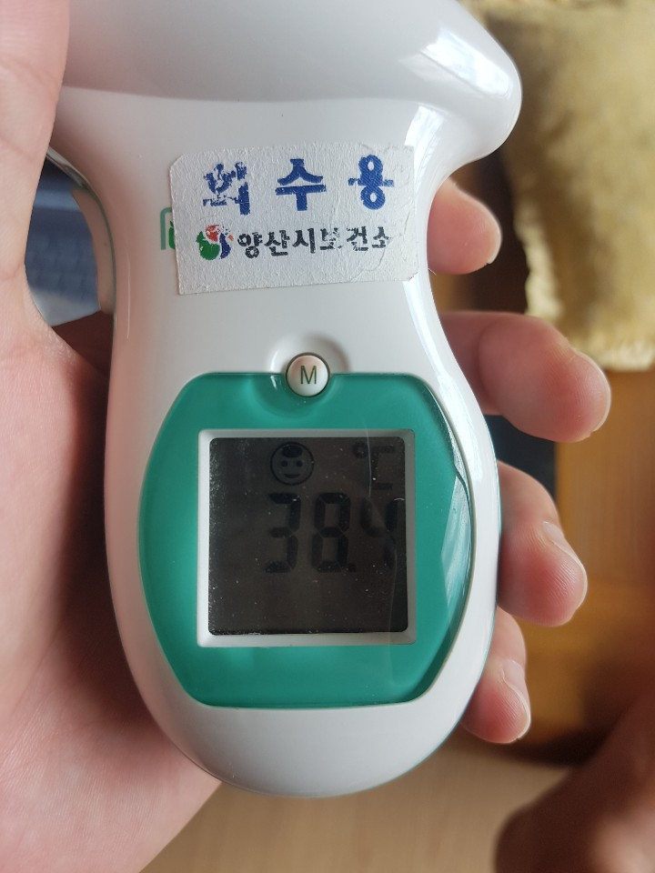

- HTML
- CSS
- JAVAScript
코딩의 시작 whh are you serious
코딩 배워서 이직해야지 ㅋㅋㅋㅋ
성우하이텍 다니기 싫다
롤포밍 거지같다
네, 불길은 대부분 다 잡혔습니다.
다만, 일부 고층에서 불씨가 남아 다시 번질 위험이 있는 만큼 소방당국은 고가사다리차와 헬기를 동원해 잔불을 끄고 있습니다.
잡히던 불길은 오늘 아침 6시쯤 18층에서 다시 살아나 건물 33층 꼭대기까지 불길이 한때 거세게 일었습니다.
이 건물은 최고 높이가 113ｍ로 70ｍ 이상 고층에서 다시 타오르는 불은 고가사다리차가 닿지 않고 소방대원의 접근도 어려워 진화가 힘들었습니다.
날이 밝자 소방청은 울산은 물론 인근 부산과 경남의 소방본부에 장비와 인력 등 동원령을 내렸습니다.
This is a paragraph.
This is another paragraph.
